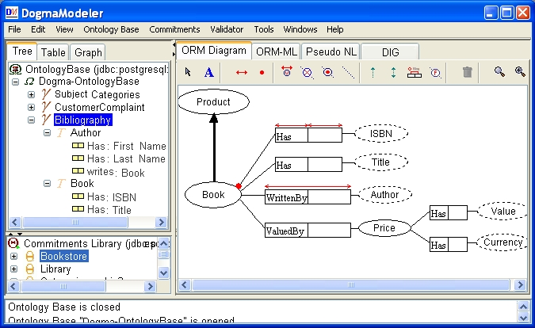

DogmaModeler
An Ontology Modeling Tool based on ORM
(GPL Open Source Code)
Software Features:
The philosophy of DogmaModeler is to enable non-IT experts to model ontologies with a little or no involvement of an ontology engineer. This challenge is tackled in DogmaModeler through well-defined methodological principles: the (1) double-articulation and the (2) modularization principles. Furthermore features include: (3) supports the use of ORM as a graphical notation for ontology modeling; (4) the verbalization of ORM diagrams into pseudo natural language (supporting flexible verbalization templates for 11 human languages, including English, Dutch, German, French, Spanish, Arabic, Russian, etc.) that allows non-experts to check, validate, or build ontologies; (5)the automatic composition of ontology modules, through a well-defined composition operator; (6) the incorporation of linguistic resources in ontology engineering; (7) the automatic mapping of ORM diagrams into the DIG description logic interface and reasoning using Racer; and many other functionalities.

Download
dm_20012_5_27.zip (new Version)
Documentation
- How to use DogmaModeler?
- How to modularize and compose ontologies?
- How to verbalize ORM ?
- How to incorporate linguistic resources in ontology engineering? and how to write a gloss?
- How to reason about ORM schemes, Pattern-based reasoning?
- How to reason about ORM schemes, Mapping ORM into DLRidf?
- How to reason about ORM schemes, Mapping ORM into OWL/SHOIN?
- An example of a real-life ontology developed in DogmaModeler?
- ORM Markup language?
- FAQ's at (DogmaModeler BLOG)
DogmaModeler by Video:
- DM-Demo-Overview-1024_768.avi
- DogmaModeler-Demo-Modeling-1280_1024.avi
- DM-Demo-AutoComposition-1024_768.avi
- DM-Demo-ModelingModeling-1024_768.avi
Contact:
email: mjarrar (-a-t-) birzeit.edu
For technical and installation problems please contact: Rami Hodrob.
Acknowledgements
Many people contributed to this tool 2001 specially: Rami Hodrob, Andriy Lisovoy, Mohamad Al-Damag, Jan Demey, and Hai Nguyen Hoang.
Footnotes:
1: The ontology double-articulation principle suggests that an application axiomatization should be build in terms of (i.e. commits to) a domain axiomatization. While a domain axiomatization focuses on the characterization of the intended meaning (i.e. intended models) of a vocabulary at the domain level, application axiomatizations mainly focus on the usability of this vocabulary according to certain application/usability perspectives. An application axiomatization is intended to specify the legal models (a subset of the intended models) of the application(s) interest. For simplicity, one can imagine WordNet as a domain axiomatization, and ORM schema as an application axiomatization, where all terms/object-types in the schema are linked with terms/synsets in WordNet. The idea here is to enable: reusability of domain knowledge and usability of application knowledge, interoperability of applications, etc. See [J05] and [J06] for more details.
2:The ontology modularization principle suggests that application axiomatizations be built in a modular manner. Application axiomatizations (e.g. ORM schemes) should be developed as a set of small modules and later composed to form, and be used as, one modular axiomatization. DogmaModeler implements a well-defined composition operator for automatic composition of modules. It combines all axioms introduced in the composed modules. See J05 and [J05a] J05a for more details.